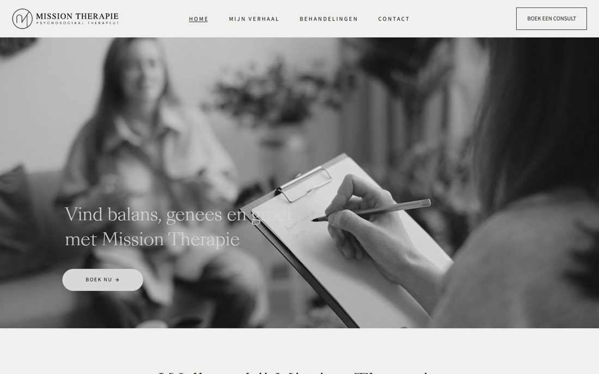

1
missiontherapie.nl
Психотерапевт, НидерландыВесь сайт чёрно-белый: фото на всю ширину в ч/б, фраза антиквой поверх, кнопка-капсула. Дальше чередование: фото на пол-экрана и текст рядом, услуги карточками в ряд, тёмный подвал. Спокойно и тепло, хотя без цвета